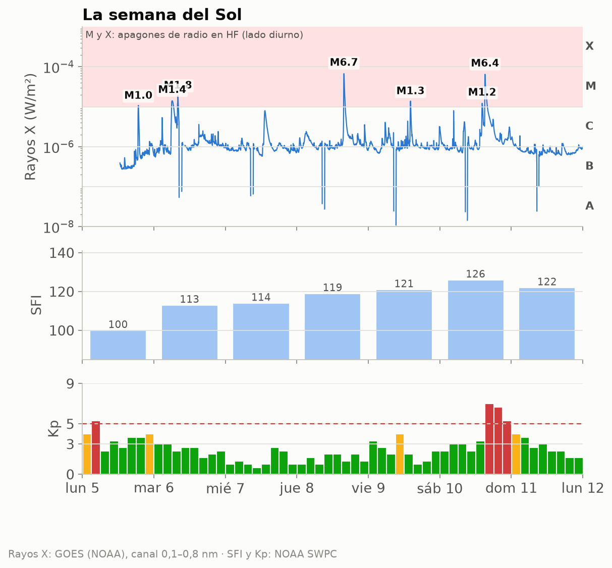
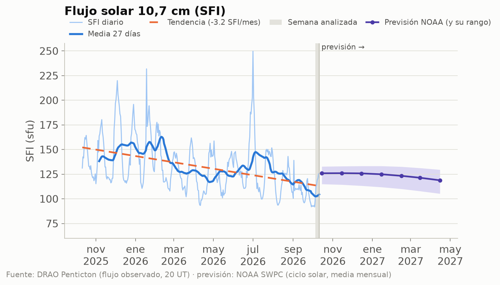
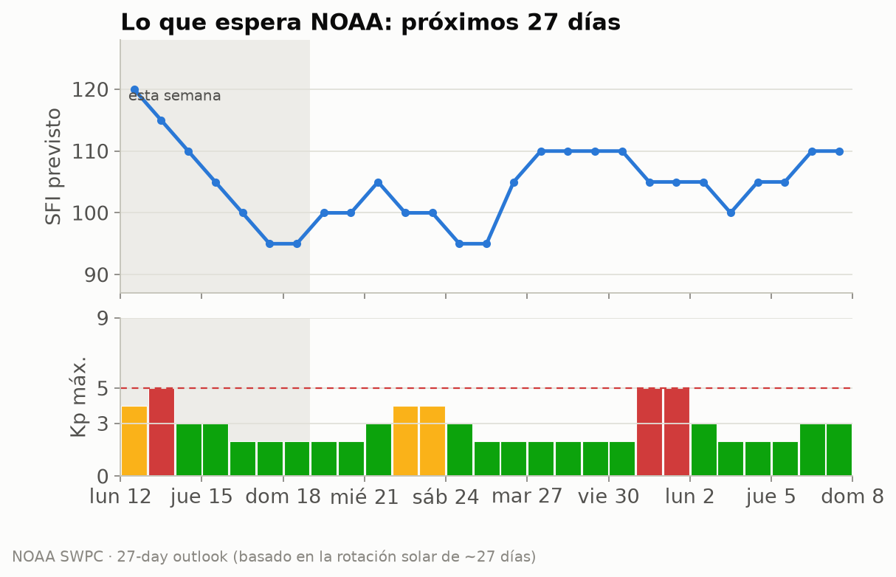
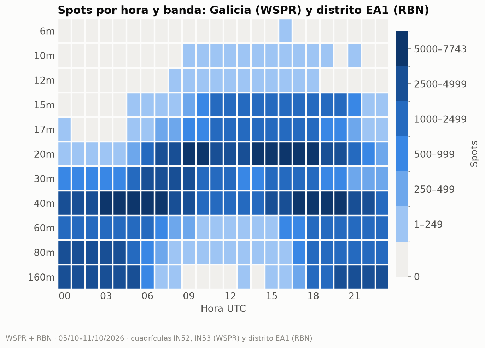
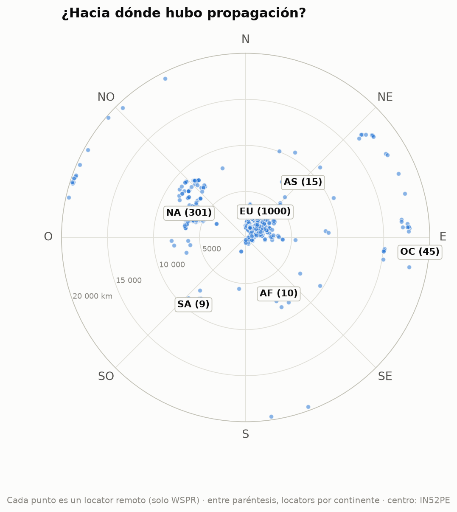
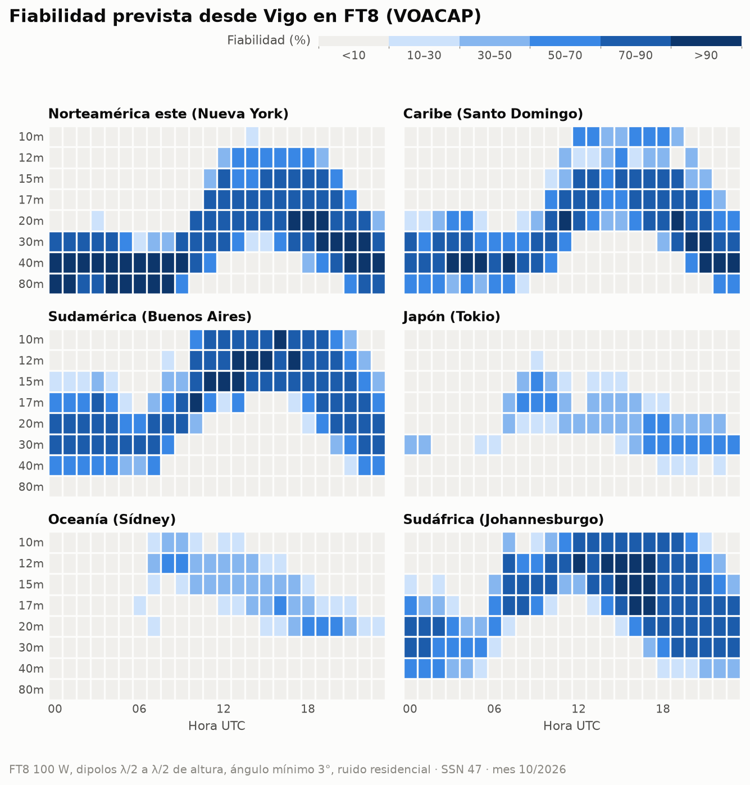

EA1RKV · Unión de Radioaficionados de Vigo-Val Miñor · estación de referencia Vigo (IN52PE) · semana analizada: 5 de octubre de 2026 – 11 de octubre de 2026 · previsión: lun 12/10 – dom 18/10
Este informe combina lo que dice la teoría (índices solares, predicciones) con lo que pasó de verdad (spots reales desde Galicia). Todas las horas en UTC salvo que se indique lo contrario.
| Día | SFI | Manchas | Ap | Kp máx. | |
|---|---|---|---|---|---|
| lun 5/10 | 100 | 58 | 24 | 5,33 | 🔴 |
| mar 6/10 | 113 | 77 | 11 | 3,00 | 🟢 |
| mié 7/10 | 114 | 78 | 6 | 2,67 | 🟢 |
| jue 8/10 | 119 | 69 | 6 | 2,00 | 🟢 |
| vie 9/10 | 121 | 93 | 11 | 4,00 | 🟡 |
| sáb 10/10 | 126 | 99 | 46 | 7,00 | 🔴 |
| dom 11/10 | 122 | 94 | 13 | 4,00 | 🟡 |
Semáforo Kp: 🟢 ≤ 3 tranquilo · 🟡 4 inquieto · 🔴 ≥ 5 tormenta.

Cómo leerla, de arriba abajo. Rayos X: cada pico es una fulguración; si entra en la franja rosa (clases M y X), en la cara iluminada de la Tierra la capa D absorbe la HF durante minutos u horas (el famoso «apagón de radio»). Los huecos de la línea son cortes de datos: cerca de los equinoccios el satélite pasa cada día un rato por la sombra de la Tierra. SFI: cuanto más alto, más arriba llega la MUF. Kp: agitación del campo magnético cada 3 horas; las barras rojas son tormenta.

Estamos en la fase descendente del ciclo 25: el SFI baja poco a poco, con altibajos de ~27 días (la rotación del Sol). La línea discontinua naranja marca la tendencia del último año; a la derecha, en violeta, la previsión mensual de NOAA con su rango de incertidumbre (zona sombreada).
Próximos 3 días (NOAA, la previsión más fiable; emitida el lun 12/10 12:30 UTC):
| Día | Kp máx. previsto | Prob. apagón de radio R1–R2 | Prob. apagón fuerte (R3+) | |
|---|---|---|---|---|
| lun 12/10 | 4,00 | 🟡 | 55 % | 15 % |
| mar 13/10 | 5,00 | 🔴 | 50 % | 10 % |
| mié 14/10 | 3,67 | 🟢 | 45 % | 5 % |
R1–R2 = fulguración M (apagón menor o moderado en la cara diurna); R3+ = fulguración X.
Esta semana: SFI entre 95 y 120, Ap máximo 28 y Kp máximo 5 (🔴 tormenta geomagnética (G1)); días con Kp ≥ 4 previstos: lun 12/10, mar 13/10.

Hasta el sáb 7/11: SFI entre 95 y 120; posible agitación geomagnética (Kp ≥ 4) el lun 12/10, mar 13/10, jue 22/10, vie 23/10, sáb 31/10, dom 1/11. Esta previsión se basa en que el Sol gira sobre sí mismo cada ~27 días: las regiones activas y los agujeros coronales que vimos hace una rotación suelen «volver a asomarse». Por eso acierta bastante con las tendencias, pero no puede anticipar una fulguración concreta.
A largo plazo: NOAA prevé para abril de 2027 un SFI medio mensual de 119 (entre 105 y 130). Es decir, el ciclo 25 sigue bajando: poco a poco, 10 m y 12 m abrirán menos días. Ojo: la media de los últimos 27 días (104) va por debajo del rango que NOAA preveía para este mes (unos 126): el Sol se está apagando más deprisa de lo esperado, y las bandas altas lo notarán.
Esta semana se registraron 340 495 spots: 299 987 de WSPR con una estación gallega en un extremo (3 estaciones en las cuadrículas IN52/IN53) y 40 508 de la Reverse Beacon Network en CW/RTTY con una estación del distrito EA1 (el RBN no da locator, así que no podemos separar Galicia de Asturias, Cantabria y Castilla y León). Las bandas con más actividad fueron 40m (99 446), 20m (76 505), 160m (40 478), 80m (34 113), y la hora más movida, las 18 UTC.

Cómo leerlo: cada casilla es una hora UTC en una banda; cuanto más oscura, más spots. Fíjate en cómo las bandas altas (10–15 m) se «encienden» con el Sol y las bajas (40–80 m) de noche.
| Banda | Distancia | Estación gallega (WSPR) | Corresponsal | Locator | Continente | Cuándo | SNR |
|---|---|---|---|---|---|---|---|
| 160m | 6 308 km | EB1A | N9AWU (oyó a Galicia) | EM69sm | Norteamérica | mar 6/10 04:54 UTC | -27 dB |
| 80m | 18 000 km | EB1A | VK7FLYN/2 (oyó a Galicia) | QE38lr | Oceanía | mié 7/10 19:42 UTC | -21 dB |
| 60m | 18 000 km | EB1A | VK7FLYN (oyó a Galicia) | QE38lr | Oceanía | vie 9/10 20:04 UTC | -24 dB |
| 40m | 19 820 km | EB1A | ZL2005SWL (oyó a Galicia) | RE68mx | Oceanía | mar 6/10 06:06 UTC | -25 dB |
| 30m | 19 820 km | EB1A | ZL2005SWL (oyó a Galicia) | RE68mx | Oceanía | mié 7/10 05:58 UTC | -27 dB |
| 20m | 19 820 km | EB1A | ZL2005SWL (oyó a Galicia) | RE68mx | Oceanía | mié 7/10 06:56 UTC | -26 dB |
| 17m | 18 000 km | EB1A | VK7FLYN/2 (oyó a Galicia) | QE38lr | Oceanía | jue 8/10 07:42 UTC | -26 dB |
| 15m | 17 837 km | EB1A | VK2JPB (oyó a Galicia) | QF59tl | Oceanía | jue 8/10 13:54 UTC | -23 dB |
Distancias de círculo máximo medidas desde IN52PE (WSPR).
Spots de WSPR (Galicia) y RBN (distrito EA1) juntos, por continente del corresponsal:
| Continente | Spots | 160m | 80m | 60m | 40m | 30m | 20m | 17m | 15m | 12m | 10m | 6m |
|---|---|---|---|---|---|---|---|---|---|---|---|---|
| Europa | 289 831 | 38286 | 32241 | 20302 | 88286 | 28958 | 61862 | 10541 | 9286 | 26 | 42 | 1 |
| Norteamérica | 38 844 | 862 | 1334 | 3053 | 8114 | 1491 | 12546 | 3592 | 7795 | 30 | 27 | · |
| África | 7 183 | 1330 | 512 | 547 | 1294 | 840 | 935 | 830 | 880 | 7 | 8 | · |
| Oceanía | 2 873 | · | 24 | 67 | 1285 | 505 | 742 | 146 | 104 | · | · | · |
| Sudamérica | 920 | · | · | · | 218 | 37 | 81 | 81 | 395 | 6 | 102 | · |
| Asia | 844 | · | 2 | 1 | 249 | 38 | 339 | 41 | 169 | 3 | 2 | · |

Mapa centrado en Vigo: el ángulo es el rumbo al que apuntaría tu antena y la distancia al centro, los kilómetros. Solo WSPR, porque el RBN no da locator: cada punto es un locator distinto (1 380 en total) y la cifra entre paréntesis es cuántos hay de cada continente. Por eso no coincide con los spots de la tabla, que suman todos los spots de WSPR y RBN.
Sin datos esta semana.
En FT8 (el modo más usado, y el más parecido a los spots WSPR/RBN de la sección 2): bandas con fiabilidad media ≥ 50 % por franja horaria (UTC), la mejor primero. En cursiva, la mejor banda cuando ninguna llega al 50 % (apertura posible pero poco fiable):
| Destino | km | Rumbo | 00–04 | 04–08 | 08–12 | 12–16 | 16–20 | 20–24 |
|---|---|---|---|---|---|---|---|---|
| Norteamérica este (Nueva York) | 5 307 | 291° | 40m, 80m, 30m | 80m, 40m, 30m | 40m, 30m | 17m, 20m, 15m | 20m, 17m, 15m | 40m, 30m, 20m |
| Caribe (Santo Domingo) | 6 288 | 265° | 40m, 30m, 80m | 40m, 30m, 80m | 30m, 20m, 40m | 17m, 15m, 20m | 17m, 15m, 20m | 30m, 40m, 20m |
| Sudamérica (Buenos Aires) | 9 922 | 219° | 20m, 30m, 17m | 30m, 20m, 40m | 17m, 15m | 12m, 15m, 10m | 10m, 12m, 15m | 17m, 20m, 15m |
| Japón (Tokio) | 10 780 | 25° | 30m (20 %) | — | 17m | 20m (44 %) | 30m, 20m | 30m |
| Oceanía (Sídney) | 18 035 | 69° | — | — | 12m (48 %) | 15m (39 %) | 20m (45 %) | 20m (32 %) |
| Sudáfrica (Johannesburgo) | 8 489 | 146° | 20m, 30m, 40m | 20m (43 %) | 12m, 15m | 12m, 10m, 15m | 12m, 15m, 17m | 20m, 17m, 30m |

En CW (a oído hace falta unos 14 dB más de señal que en FT8, así que se abren menos bandas):
| Destino | 00–04 | 04–08 | 08–12 | 12–16 | 16–20 | 20–24 |
|---|---|---|---|---|---|---|
| Norteamérica este (Nueva York) | 40m, 30m, 80m | 40m, 80m | 30m (50 %) | 17m | 20m, 17m, 15m | 40m, 30m |
| Caribe (Santo Domingo) | 40m | 40m | 20m (37 %) | 15m (44 %) | 17m, 15m | 30m, 40m |
| Sudamérica (Buenos Aires) | 20m | 20m (44 %) | 15m (42 %) | 12m, 10m | 10m, 12m | 17m |
| Japón (Tokio) | — | — | 17m (27 %) | — | 20m (24 %) | 30m (24 %) |
| Oceanía (Sídney) | — | — | 12m (22 %) | — | 17m (20 %) | — |
| Sudáfrica (Johannesburgo) | 20m (48 %) | — | 12m (48 %) | 12m, 10m | 12m, 10m, 15m | 17m, 20m |
Supuestos: 100 W, dipolos de media onda a media longitud de onda de altura en los dos extremos, ángulo de salida mínimo de 3° y ruido residencial. SSN usado: 47 (SSN efectivo del SFI previsto (106)). En SSB hacen falta ~30 dB más que en FT8. VOACAP describe el promedio mensual: un día concreto puede ir mucho mejor o peor.
Sin datos esta semana.
El jue 15/10, en Vigo amanece a las 06:47 UTC y anochece a las 17:53 UTC. Durante el crepúsculo la absorción de la capa D desaparece antes de que se deshaga la capa F: es el momento de buscar DX en 160, 80 y 40 m a lo largo del terminador.
| Destino | Orto DX | Ocaso DX | Terminador común (±45 min) | Noche en los dos extremos |
|---|---|---|---|---|
| Norteamérica este (Nueva York) | 11:07 | 22:15 | — | 22:17–06:47 |
| Caribe (Santo Domingo) | 10:33 | 22:17 | — | 22:17–06:47 |
| Sudamérica (Buenos Aires) | 09:11 | 22:07 | — | 22:06–06:47 |
| Japón (Tokio) | 20:47 | 08:06 | 07:21–07:32 UTC (orto Vigo / ocaso DX) | 17:53–20:48 |
| Oceanía (Sídney) | 19:14 | 08:08 | 18:28–18:38 UTC (ocaso Vigo / orto DX) | 17:53–19:13 |
| Sudáfrica (Johannesburgo) | 03:33 | 16:14 | — | 17:54–03:33 |
El «terminador común» es la línea gris propiamente dicha (amanecer o anochecer a la vez en los dos extremos). La «noche en los dos extremos» es la ventana para 160 y 80 m, y a menudo para 40 m.
| Concurso | Empieza (UTC) | Termina (UTC) | Horas |
|---|---|---|---|
| K1USN Slow Speed Test | vie 16/10 20:00 | vie 16/10 21:00 | 1 |
| JARL WW RTTY Contest | sáb 17/10 00:00 | lun 19/10 00:00 | 48 |
| New York QSO Party | sáb 17/10 14:00 | dom 18/10 02:00 | 12 |
| Worked All Germany Contest | sáb 17/10 15:00 | dom 18/10 14:59 | 24 |
| Stew Perry Topband Challenge | sáb 17/10 15:00 | dom 18/10 15:00 | 24 |
| Feld Hell Sprint | sáb 17/10 20:00 | sáb 17/10 23:59 | 4 |
| Argentina National 7 MHz Contest | sáb 17/10 21:30 | sáb 17/10 23:30 | 2 |
| Asia-Pacific Fall Sprint, CW | dom 18/10 00:00 | dom 18/10 02:00 | 2 |
| UBA ON Contest, 2m | dom 18/10 07:00 | dom 18/10 10:00 | 3 |
| Illinois QSO Party | dom 18/10 17:00 | lun 19/10 01:00 | 8 |
| Run for the Bacon QRP Contest | dom 18/10 23:00 | lun 19/10 01:00 | 2 |
Consejo: el meteor scatter funciona mejor al amanecer local, cuando la Tierra «barre» los meteoros de frente. Modos: MSK144 (6 m/2 m) con WSJT-X.
Los mejores pases (elevación máxima ≥ 30°) de cada satélite:
| Satélite | Día | AOS (UTC) | LOS (UTC) | Hora local | Elev. máx. | Min |
|---|---|---|---|---|---|---|
| AO-7 | lun 12/10 | 18:04 | 18:26 | 20:04 | 80° | 22 |
| RS-44 | mar 13/10 | 03:46 | 04:08 | 05:46 | 82° | 22 |
| AO-123 | mar 13/10 | 09:00 | 09:11 | 11:00 | 66° | 11 |
| AO-27 | mar 13/10 | 11:18 | 11:33 | 13:18 | 70° | 15 |
| ISS | mié 14/10 | 06:43 | 06:54 | 08:43 | 89° | 11 |
| SO-50 | mié 14/10 | 08:54 | 09:08 | 10:54 | 66° | 14 |
| RS-44 | mié 14/10 | 16:47 | 17:10 | 18:47 | 82° | 24 |
| SO-50 | mié 14/10 | 17:23 | 17:36 | 19:23 | 68° | 14 |
| FO-29 | mié 14/10 | 19:27 | 19:42 | 21:27 | 87° | 15 |
| AO-27 | mié 14/10 | 22:06 | 22:21 | 00:06 | 84° | 15 |
| AO-7 | jue 15/10 | 07:51 | 08:13 | 09:51 | 83° | 22 |
| AO-123 | vie 16/10 | 08:52 | 09:03 | 10:52 | 87° | 11 |
| ISS | vie 16/10 | 11:38 | 11:49 | 13:38 | 77° | 11 |
| FO-29 | vie 16/10 | 19:21 | 19:37 | 21:21 | 85° | 15 |
| AO-123 | vie 16/10 | 21:46 | 21:57 | 23:46 | 82° | 11 |
| RS-44 | sáb 17/10 | 03:28 | 03:49 | 05:28 | 90° | 21 |
| AO-7 | sáb 17/10 | 07:43 | 08:06 | 09:43 | 90° | 22 |
| AO-27 | sáb 17/10 | 10:57 | 11:12 | 12:57 | 77° | 15 |
| SO-50 | sáb 17/10 | 16:35 | 16:48 | 18:35 | 67° | 14 |
| ISS | dom 18/10 | 05:10 | 05:21 | 07:10 | 88° | 11 |
| FO-29 | dom 18/10 | 06:22 | 06:40 | 08:22 | 87° | 18 |
PENDIENTE: un socio debe escribir aquí su comentario (qué trabajó, qué oyó, qué recomienda para la semana). El informe no se publica sin este párrafo.
Borrador generado automáticamente el 2026-10-12 15:42 UTC por el script del radioclub EA1RKV. Las secciones sin datos indican que la fuente no respondió esta semana.